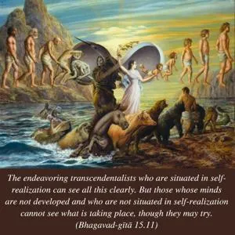

The endeavoring transcendentalists who are situated in self-realization can see all this clearly. But those whose minds are not developed and who are not situated in self-realization cannot see what is taking place, though they may try.

There are many transcendentalists on the path of spiritual self-realization, but one who is not situated in self-realization cannot see how things are changing in the body of the living entity. The word yoginaḥ is significant in this connection. In the present day there are many so-called yogīs, and there are many so-called associations of yogīs, but they are actually blind in the matter of self-realization. They are simply addicted to some sort of gymnastic exercise and are satisfied if the body is well built and healthy. They have no other information. They are called yatanto ’py akṛtātmānaḥ. Even though they are endeavoring in a so-called yoga system, they are not self-realized. Such people cannot understand the process of the transmigration of the soul. Only those who are actually in the yoga system and have realized the self, the world and the Supreme Lord – in other words, the bhakti-yogīs, those engaged in pure devotional service in Kṛṣṇa consciousness – can understand how things are taking place.